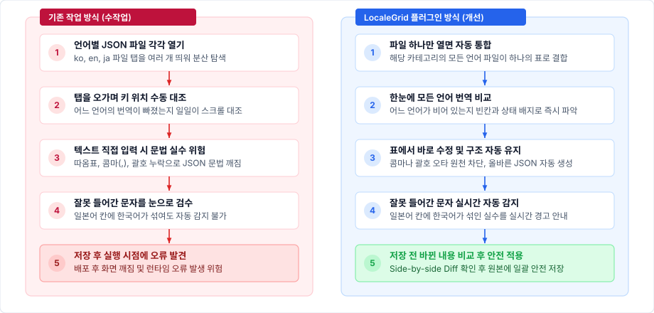
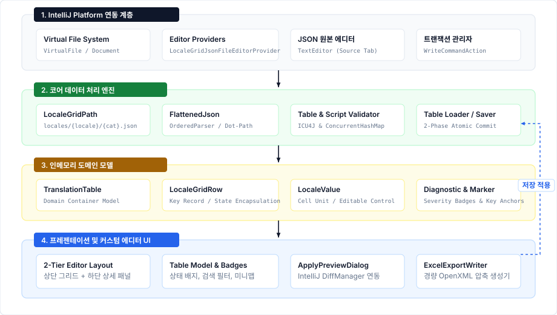
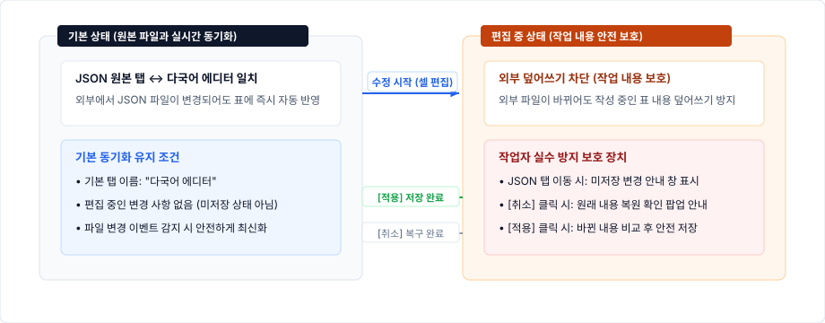
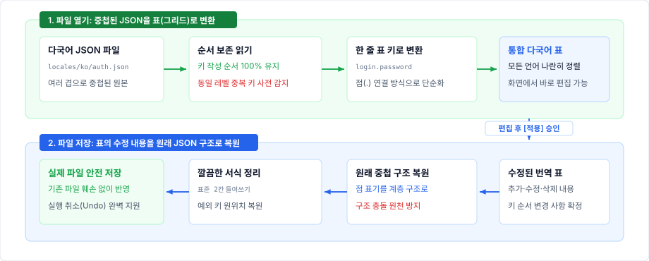
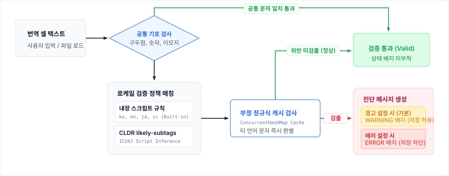
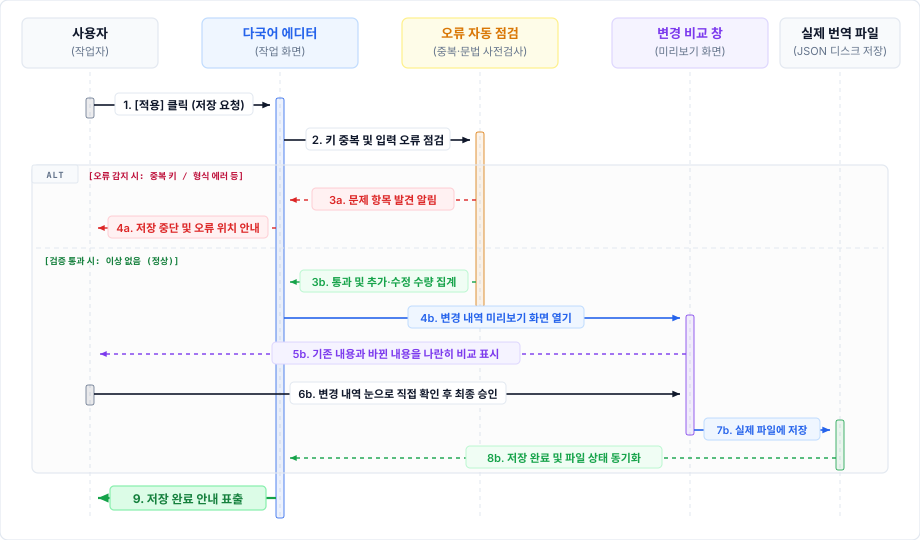
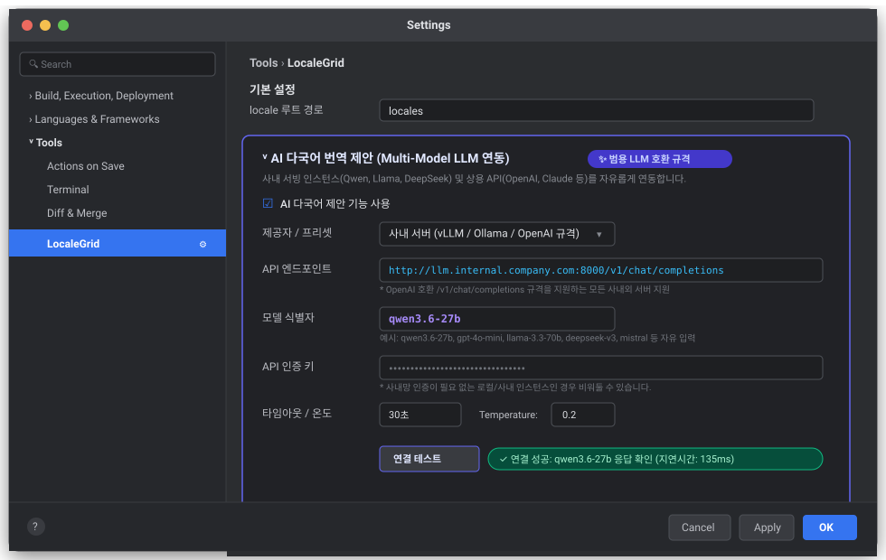
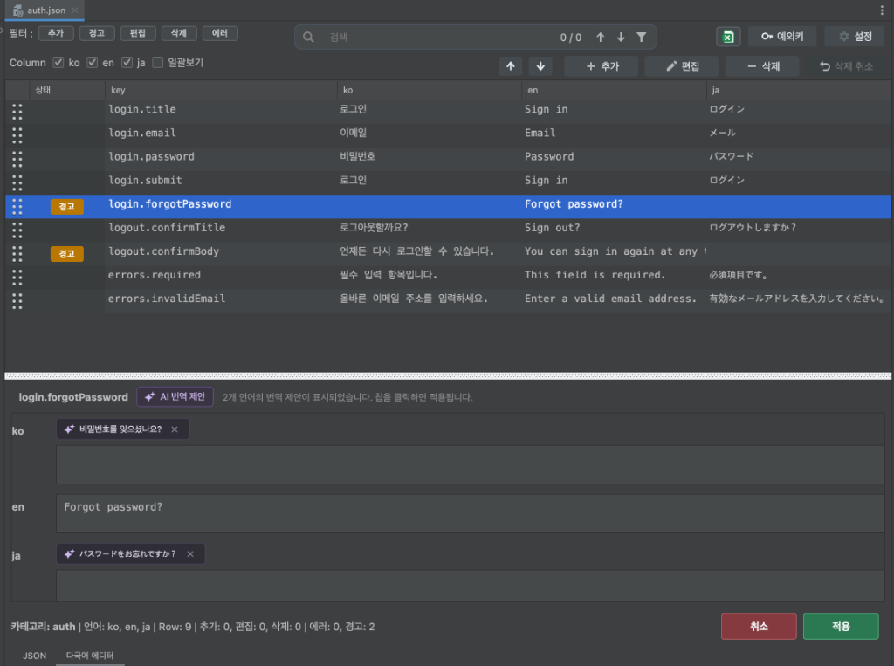

Feature Implementation & System Architecture Report
LocaleGrid 개발 기능 보고서
IntelliJ 및 PyCharm 기반 개발 환경의 다국어 리소스 JSON 파일 관리 플러그인 구현 기능 및 시스템 구조 기술 보고서
| 대상 제품 | LocaleGrid | 문서 유형 | 개발 기능 보고서 (KPI 제출용) |
|---|---|---|---|
| 작성 기준일 | 2026-09-03 | 기반 플랫폼 | IntelliJ Platform SDK / Java 17 |
| 구현 범위 | 프로덕션 Java 40개 파일 및 자동화 테스트 21개 클래스(총 117개 테스트) 전수 구현 및 검증 완료 | ||
| 문서 목적 | 다국어 통합 표 제공, 실시간 오류 감지, 듀얼 에디터 탭 보호, 사내 AI 번역 제안(LLM 연동), 엑셀 내보내기 및 안전한 저장 기능 명세 | ||
핵심 기능 요약
- 모든 언어를 한눈에 보는 통합 표: 여러 개로 나뉘어 있던 언어별 JSON 파일을 하나의 표로 모아 보여줍니다. 어떤 언어의 번역이 빠졌는지 한눈에 비교하고 바로 입력할 수 있습니다.
- 번역 실수와 누락 실시간 자동 감지: 번역이 비어 있는 칸, 겹치는 키, 일본어 자리에 잘못 들어간 한국어 등을 색상 배지로 즉시 표시하여 저장하기 전에 알려줍니다.
- 간편한 검색과 키보드 양방향 탐색: 단어를 입력하면 일치하는 번역문을 즉시 찾아주고, 방향키(↑/↓)와 단축키(Enter/Shift+Enter, F3/Shift+F3)로 이전·다음 결과를 빠르고 자유롭게 순환 탐색하며 원하는 항목만 모아서 확인할 수 있습니다.
- 사내 AI 다국어 번역 제안: 기존에 작성된 다른 언어 문맥을 바탕으로 사내 로컬 LLM이 비어 있는 언어의 번역을 추천해 주며, 추천 칩을 클릭하거나 Enter/Space 키를 눌러 원클릭으로 손쉽게 반영할 수 있습니다.
- 바뀐 내용만 미리 확인하고 안전하게 저장: 저장 버튼을 누르면 어떤 파일의 어느 문장이 바뀌었는지 변경 전과 후를 나란히 비교해 보여주어 안전하게 저장할 수 있습니다.
- 작업 목록을 엑셀로 바로 내보내기: 현재 화면에 보이는 번역 표를 클릭 한 번으로 엑셀(
.xlsx) 파일로 내려받아 기획자나 다른 담당자와 손쉽게 공유할 수 있습니다.
01프로젝트 개요 및 개발 배경
프로젝트 개발 환경에서의 다국어 리소스 관리 문제점과 LocaleGrid 개발 목적
1.1 개발 배경 및 문제 정의
프로젝트 개발에서 다국어 지원(i18n/l10n)은 필수적이나, 기존 개발 환경에서는 다음과 같은 문제점과 비효율이 존재했습니다:
언어별 다국어 파일(locales/ko/category.json, locales/en/category.json 등)이 물리적으로 분리되어 있어, 특정 키의 번역 누락이나 번역값 간의 불일치를 확인하기 위해 여러 탭을 오가며 수작업으로 비교해야 했습니다.
JSON의 계층형 트리 구조(Nested Object)를 텍스트 에디터로 직접 편집할 때 문법 오류(Syntax Error), 콤마 누락, 괄호 불일치, 그리고 중첩 키와 리프 키 간의 경로 충돌(Dot-path conflict)이 발생하기 쉬웠습니다.
번역 작업 중 한국어 리소스에 라틴 문자나 키릴 문자가 섞이거나, 일본어 리소스에 한글이 잘못 입력되는 등의 문자 체계 불일치를 개발 또는 빌드 시점에 인지하지 못해 배포 후 런타임 오류나 UI 깨짐 현상으로 이어졌습니다.
개발자가 수많은 다국어 키와 번역문을 일일이 확인하고 검수하는 과정에서 누락, 오기입, 불일치 등의 인적 오류(Human Error)가 빈번하게 발생하며, 이를 사전에 체계적으로 감지하기 어려웠습니다.
1.2 사용자 작업 방식 비교 (기존 수작업 vs LocaleGrid 플러그인)
사용자 관점에서 파일을 일일이 열어 확인하던 기존 작업 방식과 LocaleGrid 플러그인을 도입한 후의 개선된 작업 방식을 비교하면 다음과 같습니다:

Mermaid 다이어그램 소스 보기
flowchart TD
subgraph Before ["기존 작업 방식 (수작업)"]
direction TB
B1["1. 언어별 JSON 파일 각각 열기\n(ko, en, ja 파일 탭 분산)"]
B2["2. 탭을 오가며 키 위치 수동 대조\n(어느 언어가 빠졌는지 일일이 확인)"]
B3["3. 텍스트 직접 입력 시 문법 실수 위험\n(콤마, 따옴표, 괄호 누락으로 JSON 깨짐)"]
B4["4. 잘못 들어간 문자를 눈으로 검수\n(일본어 칸에 한국어가 섞여도 자동 감지 불가)"]
B5["5. 저장 후 실행 시점에 오류 발견\n(화면 깨짐 및 런타임 오류 위험)"]
B1 --> B2 --> B3 --> B4 --> B5
end
subgraph After ["LocaleGrid 플러그인 방식 (개선)"]
direction TB
A1["1. 파일 하나만 열면 자동 통합\n(해당 카테고리의 모든 언어 표 결합)"]
A2["2. 한 화면에서 모든 언어 번역 비교\n(누락된 번역과 빈칸 즉시 확인)"]
A3["3. 표에서 바로 수정하여 안전하게 입력\n(콤마·괄호 오타 없이 JSON 구조 자동 유지)"]
A4["4. 잘못 들어간 문자 실시간 자동 감지\n(일본어 칸 한국어 혼입 즉시 경고 안내)"]
A5["5. 저장 전 바뀐 내용 비교 후 안전 적용\n(Side-by-side Diff 확인 후 안전 저장)"]
A1 --> A2 --> A3 --> A4 --> A5
end1.3 플러그인 핵심 기능
LocaleGrid는 개발자와 번역 검수자가 직관적이고 편리하게 작업할 수 있도록 다음 6대 핵심 기능을 제공합니다:
- 모든 언어를 한눈에 보는 통합 표: 파일 하나만 열면 같은 카테고리의 모든 언어가 하나의 표에 열(Column) 단위로 자동 정렬되어, 누락되거나 비어 있는 번역을 한눈에 찾아 채워 넣을 수 있습니다.
- 번역 실수와 누락 실시간 자동 감지: 새로 추가된 키(초록), 수정된 값(파랑), 번역 누락(주황), 삭제 예정(회색), 구조 충돌(빨강)을 직관적인 색상 배지로 표시하며, 일본어 칸에 한국어가 잘못 섞여 들어가는 등의 실수를 실시간으로 짚어줍니다.
- 간편한 검색과 키보드 양방향 탐색: 단어 검색 시 일치하는 번역문이 실시간 하이라이트되며, 방향키(↑/↓)와 단축키(Enter/Shift+Enter, F3/Shift+F3)로 이전·다음 결과를 순환 탐색합니다. 주의가 필요한 경고/오류 행만 클릭 한 번으로 모아보고 마우스 드래그로 키의 표시 순서도 자유롭게 바꿀 수 있습니다.
- 사내 AI 다국어 번역 제안: 기존에 작성된 다른 언어 문맥을 참고하여 사내 로컬 LLM이 비어 있는 언어의 번역을 추천해 주며, 추천 칩을 클릭하거나 Enter/Space 키로 즉시 표에 적용하여 다국어 초안 작성 시간을 획기적으로 줄여줍니다.
- 바뀐 내용만 미리 확인하고 안전하게 저장: 저장을 누르면 어떤 파일의 어느 문장이 바뀌었는지 변경 전과 후를 나란히 비교해 보여주는 프리뷰 창을 제공하여 안전하게 적용할 수 있습니다.
- 작업 목록을 엑셀로 바로 내보내기: 현재 표에서 검색하거나 필터링한 번역 목록을 버튼 하나로 엑셀(
.xlsx) 파일로 내려받아 번역팀이나 기획팀과 즉시 공유할 수 있습니다.
02시스템 아키텍처 및 도메인 모델
계층화된 모듈 구조와 불변 도메인 모델 설계
2.1 계층형 시스템 아키텍처
LocaleGrid는 각 계층이 명확한 책임을 가지며 선 겹침 없이 연동되도록 수직 계층형 아키텍처로 구현되었습니다.

Mermaid 다이어그램 소스 보기
flowchart TD
subgraph IDE_Platform [IntelliJ Platform SDK / VFS]
direction TB
VFS[Virtual File System & Document]
Providers[Editor Providers]
end
subgraph Core_Engine [Core Processing Engine]
direction TB
PathResolver[LocaleGridPath]
LoaderSaver[TranslationTableLoader / Saver]
JsonParser[FlattenedJson & JsonTreeWriter]
Validator[TableValidator & LocaleScriptValidator]
end
subgraph Domain_Model [In-Memory Domain Model]
direction TB
Table[TranslationTable]
RowValue[LocaleGridRow & LocaleValue]
Diagnostics[Diagnostic & ExceptionKeyMarker]
end
subgraph UI_Presentation [Custom Editor UI Layer]
direction TB
Editor[LocaleGridFileEditor]
TableUI[JBTable & LocaleGridTableModel]
DetailPanel[Detail Editing Panel]
DiffExport[ApplyPreviewDialog & ExcelExportWriter]
end
IDE_Platform --> Core_Engine
Core_Engine --> Domain_Model
Domain_Model --> UI_Presentation
UI_Presentation -.->|저장 / 적용 시| Core_Engine2.2 핵심 도메인 모델 세부 명세
| 모델 클래스 | 주요 역할 및 상태 캡슐화 | 기술적 차별성 및 무결성 보장 방식 |
|---|---|---|
TranslationTable |
동일 카테고리의 모든 언어 번역 데이터를 메모리 상에서 총괄 관리하는 최상위 모델. 언어 목록, 행 목록, 파일 매핑, 진단 목록, 순서 변경 상태 관리. | 카테고리 단위의 단일 인메모리 트랜잭션 모델로 동작하여 원자적 저장 및 일괄 검증의 기반을 제공. |
LocaleGridRow |
표의 한 행을 담당하는 번역 키 단위 모델. 원본 키와 수정 키, 행 구분(일반 번역행 vs 예외 키행), 추가 및 삭제 예정 상태 보관. | isModified() 메서드를 통해 키 이름 변경, 행 타입 전환, 삭제 상태, 개별 셀 값의 변경 여부를 즉시 계산하여 상태를 반환. |
LocaleValue |
특정 로케일의 번역 값 단위. value, 원본 존재 여부(present), 편집 가능 여부(editable), 수정 플래그(modified)를 관리. |
문자열 및 빈칸만 편집을 허용하고, 복잡한 JSON 객체/배열/숫자 등은 읽기 전용으로 보호하여 원본 구조 손상 방지. |
Diagnostic |
검증 및 파싱 중 발생한 진단 메시지. 심각도(ERROR, WARNING), 대상 키, 대상 로케일 정보를 포함. |
오류(저장 차단)와 경고(저장 허용)를 명확히 구분하여 셀·행별 안내 풍선말 및 색상 배지와 연동. |
ExceptionKeyMarker |
번역 대상이 아닌 주석이나 구분용 예외 키(예: __section__)의 원래 위치를 기억하는 모델 객체. |
일반 번역 키들 사이의 원래 위치를 기억해 두었다가 저장 시 그 자리에 안전하게 보존. |
LocaleGridLlmClient |
사내 호스팅 Qwen, vLLM, Ollama 및 OpenAI 호환 LLM 엔드포인트와 비동기 통신하는 HTTP 통신 클라이언트. | Java 11+ 내장 HttpClient 기반 비동기 Non-blocking 호출, 실시간 연결 테스트, 타임아웃 제어 및 응답 무결성 검증. |
TranslationSuggestionService |
다국어 키와 기존 입력된 언어 문장을 문맥으로 종합하여 비어 있는 대상 언어의 번역을 LLM에 질의하고 추천하는 서비스. | 정형 JSON 응답 유도 시스템 프롬프트 및 불필요한 추론(thinking) 출력 제어로 통신 지연 최소화 및 안정성 확보. |
TranslationSuggestionChip |
비어 있는 번역 입력란에 보라색 별 아이콘과 추천 번역 문구를 표시하는 대화형 제안 칩 UI 컴포넌트. | 마우스 원클릭 또는 Enter/Space 키 즉시 적용, 닫기 액션 분리, 가용 너비 맞춤 말줄임 및 전체 문구 툴팁 제공. |
03주요 기능 소개
실제 구현된 듀얼 에디터 탭, 무결성 검증 엔진, UI/UX 인터랙션 및 저장 메커니즘 소개
3.1 파일 탐색 및 듀얼 에디터 탭 제공
1) 이중 파일 패턴 지원:
locales/{locale}/{category}.json 패턴과 locales/{locale}/{category}_{locale}.json 접미사 패턴을 모두 자동으로 인식하며, 프로젝트 설정의 localesRoot를 기준으로 파일을 그룹화합니다.
2) 듀얼 에디터 탭 구성:
로케일 JSON 파일을 열면 기본 텍스트 에디터 대신 JSON 원본 탭과 다국어 에디터 탭이 나란히 제공됩니다.

3) 동기화 및 편집 상태 보존 정책:
다국어 에디터에서 데이터를 변경하기 전까지는 JSON 원본 탭의 소스 코드가 수정되면 다국어 에디터로 자동 동기화됩니다. 다국어 에디터에서 데이터 수정이 시작되면 아래와 같이 탭 이름이 다국어 에디터 (편집중)으로 변경되며 외부 파일 변경으로 작업 내용이 덮어씌워지지 않도록 안전한 편집 격리 모드로 전환됩니다. 작업 중인 내용은 [적용]하거나 [취소]하기 전까지 안전하게 유지됩니다.

4) 편집 중 탭 전환 보호 알림:
다국어 에디터에서 값을 수정한 상태(편집중)에서 원본 JSON 탭으로 전환을 시도할 경우, 저장되지 않은 변경 사항이 있음을 알리고 사용자의 확인을 거치도록 다이얼로그를 표시합니다.


Mermaid 다이어그램 소스 보기
stateDiagram-v2
[*] --> SynchronizedState: 파일 열기
state "기본 상태 (원본 파일과 실시간 동기화)" as SynchronizedState {
[*] --> SyncIdle
SyncIdle --> SyncIdle: 외부 파일 수정 시 표에 실시간 자동 반영
}
SynchronizedState --> EditingState: 표에서 셀 수정 시작
state "편집 중 상태 (작업 내용 안전 보호)" as EditingState {
[*] --> EditInProgress
EditInProgress --> TabSwitchWarning: JSON 탭으로 전환 시도
TabSwitchWarning --> EditInProgress: 계속 편집 선택
TabSwitchWarning --> SynchronizedState: JSON으로 이동 (동기화 보류)
}
EditingState --> ApplyPreview: [적용] 클릭
EditingState --> CancelConfirm: [취소] 클릭
CancelConfirm --> SynchronizedState: 변경 취소 확인 (원본 복구)
CancelConfirm --> EditInProgress: 취소 철회 (계속 편집)
ApplyPreview --> SynchronizedState: 변경 비교(Diff) 확인 후 안전 저장 완료3.2 중첩 JSON 파일의 표 변환 및 원래 구조 복원
- 원본 키 작성 순서 100% 보존: 원본 JSON 파일에 작성된 키의 순서를 그대로 기억하여 표에 정렬하며, 동일한 위치에 이름이 같은 중복 키가 있으면 다른 값으로 덮어쓰지 않고 즉시 오류로 감지하여 안전하게 보호합니다.
- 점(.) 표기를 통한 한 줄 키 변환: 여러 겹으로 복잡하게 둘러싸인 중첩 구조(예:
login { password: ... })를 점으로 연결된 직관적인 한 줄 키(login.password)로 펼쳐, 표에서 모든 언어를 나란히 비교하고 편하게 편집할 수 있도록 변환합니다. - 원래 중첩 구조로 안전한 복원: 표에서 작업을 마치고 저장할 때는 점 표기를 다시 원래의 깔끔한 중첩 JSON 구조로 되돌리며, 표준 2칸 들여쓰기 서식과 예외 키의 원래 위치까지 완벽하게 복원합니다.

Mermaid 다이어그램 소스 보기
flowchart TD
subgraph ReadPipeline ["1. 파일 열기: 중첩된 JSON을 표(그리드)로 변환"]
direction TB
JSON_File["원본 다국어 JSON 파일
(여러 겹으로 중첩된 구조)"] --> Parser["순서 보존 읽기
(키 순서 100% 유지)"]
Parser --> DuplicateCheck{"동일 레벨 중복 키 감지"}
DuplicateCheck -->|중복 발견| ErrorDiag["오류 감지 및 저장 차단"]
DuplicateCheck -->|정상| Flatten["한 줄 표 키로 변환
(점 연결 방식: login.password)"]
Flatten --> MemoryModel["통합 다국어 표
(화면에서 바로 편집 가능)"]
end
subgraph WritePipeline ["2. 파일 저장: 표의 수정 내용을 원래 JSON 구조로 복원"]
direction TB
EditedRows["수정된 번역 표
(추가·수정·삭제 내용 확정)"] --> TreeWriter["원래 중첩 구조 복원
(점 표기를 계층 구조로)"]
TreeWriter --> TypeConflictCheck{"구조 충돌 여부 감지"}
TypeConflictCheck -->|충돌| BlockSave["저장 차단 및 오류 안내"]
TypeConflictCheck -->|정상| ReconstructedTree["깔끔한 서식 정리
(표준 2칸 들여쓰기)"]
ReconstructedTree --> VFS_Save["실제 파일 안전 저장
(실행 취소 완벽 보존)"]
end
MemoryModel -->|사용자 편집 후 [적용] 승인| EditedRows3.3 유니코드 스크립트 기반 다국어 문자 체계 검증
ICU4J 및 Java 유니코드 표준 엔진을 결합하여 번역문에 다른 나라 문자가 잘못 섞여 들어가는 것을 실시간으로 감지합니다.
| 로케일 | 허용 Unicode Script | 동작 규칙 및 예외 처리 |
|---|---|---|
ko (한국어) |
HANGUL, LATIN |
한글과 기본 라틴 문자 허용. 키릴, 아랍, 히라가나 등 타 언어 문자 유입 검출. |
en (영어) |
LATIN |
순수 라틴 문자 체계만 허용. 동아시아 문자 및 타 언어 문자 유입 검출. |
ja (일본어) |
HIRAGANA, KATAKANA, HAN, LATIN |
히라가나, 가타카나, 한자(한문) 및 라틴 문자 허용. 한글 혼입 즉시 검출. |
vi (베트남어) |
LATIN |
성조 결합 라틴 문자 허용. |
| 기타 표준 언어 | CLDR likely-subtags 기반 자동 추론 | ru(키릴), th(타이), ar(아랍) 등 표준 로케일의 예상 문자 체계를 자동 추론. |
| 공통 허용 | COMMON, INHERITED, 숫자, 이모지 |
모든 언어에서 문장부호, 결합 문자, 숫자(\p{N}), 유니코드 이모지(U+1F000~U+1FAFF)는 범용 허용. |

Mermaid 다이어그램 소스 보기
flowchart TD
Input["번역 셀 텍스트 입력"] --> CommonFilter{"공통 허용 문자 검사\n(문장부호, 숫자, 결합문자, 이모지)"}
CommonFilter -->|일치| ValidPass["검증 통과 (Valid)"]
CommonFilter -->|불일치| PolicyMatch{"로케일 검증 정책 매칭\n(LocaleScriptPolicy)"}
PolicyMatch -->|기본 로케일| BuiltIn["내장 스크립트 규칙\n(ko, en, ja, vi)"]
PolicyMatch -->|기타 로케일| Subtags["CLDR likely-subtags\n(ICU4J 자동 추론)"]
BuiltIn --> RegexCache["ConcurrentHashMap 정규식 캐시 검사"]
Subtags --> RegexCache
RegexCache --> ViolationCheck{"타 언어 문자 혼입 여부"}
ViolationCheck -->|미검출| ValidPass
ViolationCheck -->|검출| BuildDiag["위반 문자 및 스크립트 요약 생성\n(Diagnostic 불변 객체)"]
BuildDiag --> SeverityBranch{"프로젝트 설정\n(문자 위반 처리)"}
SeverityBranch -->|경고 설정| WarnDiag["WARNING 상태 배지 (저장 허용)"]
SeverityBranch -->|에러 설정| ErrorDiag2["ERROR 상태 배지 (저장 차단)"]3.4 다국어 표 편집 화면 및 주요 작업 편의 기능
다국어 에디터는 모든 언어의 번역을 한눈에 보며 빠르게 작업하는 상단 번역 표(그리드)와, 긴 문장을 언어별로 차분히 다듬을 수 있는 하단 상세 편집 창으로 구성되어 작업 편의성을 극대화했습니다.

1) 번역 상태 배지 안내
작업 중인 행의 상태와 검증 결과를 5가지 색상 배지로 표시하여 주의가 필요한 항목을 한눈에 알려줍니다.
| 배지 | 색상 | 상태 의미 및 발생 조건 | 저장 여부 | 동작 및 조치 방법 |
|---|---|---|---|---|
| 추가 | 초록색 | 툴바의 [추가] 버튼으로 새로 만든 번역 키 |
저장 대상 | 아직 파일에 반영되지 않은 새 항목입니다. 저장 시 각 언어 파일에 새 키로 추가됩니다. |
| 편집 | 파란색 | 키 이름을 바꾸거나 번역 셀 값을 수정한 항목 | 저장 대상 | 원본과 달라진 변경 사항이 있는 상태입니다. 저장 시 수정한 내용이 파일에 반영됩니다. |
| 경고 | 주황색 | 번역이 비어 있거나(빈칸) 다른 언어 문자가 섞인 항목 | 저장 가능 | 확인이 필요한 주의 상태입니다. 저장을 막지 않으므로 먼저 저장하고 나중에 채워 넣을 수 있습니다. |
| 삭제 | 회색 | 툴바의 [삭제] 버튼을 눌러 삭제 대기 중인 항목 |
저장 시 삭제 | 파일에서 바로 지우지 않고 대기 상태로 둡니다. 실수라면 [삭제 취소] 버튼으로 바로 복구할 수 있습니다. |
| 에러 | 빨간색 | 키 이름이 겹치거나 JSON 경로 충돌이 있는 항목 | 저장 차단 | 파일이 망가질 수 있는 오류입니다. 에러가 남아 있으면 저장이 차단되므로 키 이름을 바르게 고쳐야 합니다. |
여러 상태가 함께 발생할 때:
새로 추가된 항목인데 번역이 비어 있다면 추가와 경고가 함께 표시되는 것처럼, 해당하는 배지가 나란히 모두 표시되어 상태를 빠짐없이 알려줍니다. (삭제 대기 항목은 단일 삭제 배지로 우선 표시)
2) 작업 편의 기능
- 원클릭 상태 모아보기 (5대 필터 토글 버튼): 상단 툴바의
추가,경고,편집,삭제,에러버튼을 클릭하여 원하는 상태의 행만 즉시 필터링하여 조회할 수 있습니다. 복수 선택이 가능하여[에러]와[경고]행만 모아서 집중 점검할 수 있습니다. - 실시간 단어 검색 및 키보드 양방향 탐색: 검색창에 단어를 입력하면 500ms 디바운스를 적용하여 일치하는 번역문을 파란색 볼드로 실시간 강조합니다. 검색창에서 키보드 방향키(↑/↓)와 Enter / Shift+Enter를 누르거나, 테이블 포커스 상태에서 F3 / Shift+F3 키를 눌러 매칭 결과를 이전·다음으로 빠르게 순환 탐색할 수 있으며, 툴팁을 통해 직관적인 단축키 안내를 제공합니다.
- 드래그 앤 드롭 행 순서 변경: 마우스로 좌측 핸들을 끌어당기거나 툴바의 이동 버튼(
▲,▼)을 눌러 키의 순서를 자유롭게 바꿀 수 있습니다. - 스크롤바 실시간 미니맵 바 (
StatusScrollMap): 수직 스크롤바 트랙 위에 에러(빨강), 경고(주황), 수정(파랑), 추가(초록) 위치를 작은 점(도트 마커)으로 표시하여, 수천 개 행 중에서도 클릭 한 번으로 문제 행을 찾아 이동할 수 있습니다. - 하단 상세 입력 패널 및 AI 번역 연동: 선택한 키의 언어별 번역문을 개별 입력 칸에서 넓고 여유롭게 편집할 수 있으며, 입력 오류 안내를 즉시 확인합니다. 참조할 언어 텍스트와 비어 있는 번역 대상 언어가 존재할 경우 키명 우측의
[AI 번역 제안]버튼이 활성화되어 원클릭으로 추천 번역을 받아볼 수 있습니다. - 특수문자 및 줄바꿈 보존: 줄바꿈(
변경 취소 안전 확인:
에디터 하단의 [취소] 버튼을 클릭할 때 저장되지 않은 변경 사항이 존재하면, 원본 상태로 복구하기 전 사용자 확인을 거쳐 작업 데이터가 실수로 유실되는 것을 방지합니다.

3.5 변경 내용 미리보기 및 안전한 저장 흐름
단 한 번의 잘못된 클릭이나 실수로 기존 번역 파일이 손상되는 일이 없도록, 저장 전 오류 자동 점검과 변경 전·후 비교(미리보기) 화면을 거치는 2중 안전장치를 제공합니다.


Mermaid 다이어그램 소스 보기
sequenceDiagram
autonumber
actor User as 사용자 (작업자)
participant Editor as 다국어 에디터 (화면)
participant Validator as 오류 자동 점검
participant PreviewDlg as 변경 비교 창 (미리보기)
participant FileStorage as 실제 번역 파일 (JSON)
User->>Editor: 1. [적용] 버튼 클릭 (저장 요청)
Editor->>Validator: 2. 키 중복 및 입력 오류 점검
alt 오류가 감지된 경우 (중복 키, 잘못된 경로 등)
Validator-->>Editor: 3a. 문제 항목 발견 알림
Editor-->>User: 4a. 저장 중단 및 오류 위치 안내 (원본 보호)
else 검증을 통과한 경우 (정상)
Validator-->>Editor: 3b. 통과 및 추가·수정 수량 집계
Editor->>PreviewDlg: 4b. 변경 내역 미리보기 화면 열기
PreviewDlg-->>User: 5b. 기존 내용과 바뀐 내용을 나란히 비교 표시
User->>PreviewDlg: 6b. 변경 내역 눈으로 직접 확인 후 최종 승인
PreviewDlg->>FileStorage: 7b. 실제 파일에 안전하게 저장 (실행 취소 보존)
FileStorage-->>Editor: 8b. 저장 완료 및 파일 상태 동기화
Editor-->>User: 9. 저장 완료 안내 표출
end3.6 필터링된 내용 엑셀 다운로드 (ExcelExportWriter)
전문 번역인 협업 및 검수 효율화:
실제 프로젝트 진행 중 외부 전문 번역인이나 사내 감수자에게 특정 화면이나 새로 추가된 번역 키만 전달하여 검수를 요청해야 할 때가 있습니다. 이전에는 개발자가 복잡한 JSON 파일에서 대상 키를 일일이 찾아 복사·붙여넣기하며 수작업으로 엑셀을 만들어야 하는 번거로움과 누락 실수가 잦았습니다.
LocaleGrid에서는 이러한 불편을 해소하기 위해 원하는 검색어, 카테고리 또는 상태(신규 추가, 미번역, 경고 등)로 필터링된 내용만 즉시 엑셀(.xlsx) 파일로 다운로드할 수 있도록 구현했습니다. 전문 번역인은 복잡한 개발 도구나 JSON 파일 구조를 알 필요 없이 친숙한 엑셀 환경에서 편안하게 번역을 검수할 수 있습니다.
- 전문 서식 자동 적용: 첫 행 헤더 틀 고정(행 고정), 전 컬럼 자동 필터, 줄바꿈 서식, 최적의 열 너비가 자동으로 깔끔하게 적용되어 즉시 전달 가능.
- 초경량 무의존 고속 생성: 외부 무거운 라이브러리(Apache POI 등) 없이 순수 Java의
ZipOutputStream과 OpenXML 표준 규격을 직접 구현하여 수천 개 행도 1초 미만에 가볍고 빠르게 다운로드. - 원클릭 완료 액션: 다운로드가 끝나면 바로 확인할 수 있도록 '파일 열기', '폴더 열기' 바로가기 창을 제공.
3.7 예외 키 보호 및 프로젝트 맞춤 환경 설정
1) 번역 제외 키(예외 키) 안전 보호:
에디터 상단의 예외키 버튼을 통해 번역할 필요가 없는 주석이나 섹션 구분용 예외 키(예: __section__, __comment__)를 지정할 수 있습니다. 지정된 예외 키는 번역 표에서 숨겨져 작업자가 번역에만 집중할 수 있게 도우며, 파일을 저장할 때는 원래 있던 자리 그대로 안전하게 보존되어 파일 구조가 깨지지 않습니다.

2) 프로젝트 맞춤 환경 설정:
IntelliJ 환경 설정(Settings > Tools > LocaleGrid)에서 팀의 개발 규칙과 작업 편의에 맞춰 옵션을 자유롭게 설정할 수 있습니다.
- 기본 설정: 다국어 번역 파일이 모여 있는 폴더 위치(기본
locales)와, 표에 나열할 언어 순서(예:한국어(ko) → 영어(en) → 일본어(ja))를 지정합니다. - 상세 설정: 번역 제외 키 목록, 저장 시 들여쓰기 공백 크기(2칸 또는 4칸), 타 언어 문자 감지 기능 켜기/끄기 및 위반 시 알림 수준(경고 표시 또는 저장 차단)을 유연하게 조정할 수 있습니다.
- 사내 AI 번역 제안 (LLM 연동) 설정: 사내 서빙 인스턴스(Qwen, DeepSeek, Llama 등) 및 OpenAI 호환 엔드포인트 URL, 모델 식별자, API Key, 타임아웃(초)을 설정하며,
[연결 테스트]버튼으로 실시간 통신 상태와 응답 속도를 즉시 점검할 수 있습니다. - 작업 데이터 안전 보호: 표에서 편집 중인 내용이 남아 있을 때는 작업 중인 데이터가 꼬이는 것을 막기 위해 환경 설정 변경을 안전하게 제한합니다.

3.8 사내 AI 다국어 번역 제안 (LLM 연동)
1) 사내 로컬 LLM 연동 및 사내 보안 유지:
사내 폐쇄망 환경에서 자체 호스팅 중인 로컬 LLM(Qwen, DeepSeek, Llama 등) 및 OpenAI 호환 규격의 엔드포인트와 연동하여, 다국어 리소스가 외부 클라우드로 유출될 걱정 없이 안전하게 다국어 번역 초안을 작성할 수 있습니다.

2) 지능형 활성화 조건 및 작업 상태 분리:
- 스마트 버튼 제어: 하단 상세 패널 키명 우측의
[AI 번역 제안]버튼은 기준이 되는 참조 언어(한국어, 영어 등)가 1개 이상 존재하고, 비어 있는 번역 대상 언어가 있을 때만 활성화됩니다. 모든 언어가 이미 입력되어 있으면 불필요한 요청을 방지하기 위해 버튼이 자동으로 비활성화됩니다. - 상태 안내 영역 독립 분리: AI 요청 진행 상태(전송 중, 성공, 실패 알림)는 버튼 바로 오른쪽에 동일한 글꼴 크기로 간결하게 표시되며, 기존 하단 상태바의 정보(카테고리, 전체 행 수, 편집/오류/경고 카운트)를 손상시키지 않고 그대로 보존합니다.
3) 대화형 추천 번역 칩 (TranslationSuggestionChip):
- 원클릭 즉시 적용: 추천 문구는 작은 보라색 별 아이콘이 달린 칩 형태로 표시되며, 마우스 클릭 한 번 또는 키보드 포커스 상태에서
Enter/Space키를 눌러 입력란에 즉시 반영할 수 있습니다. 적용 시 해당 행은 일반[편집]상태로 전환되어 안전한 저장 파이프라인으로 연결됩니다. - 닫기 액션 분리: 칩 우측의 닫기(
×) 버튼을 클릭하면 추천 문구를 반영하지 않고 제안 칩만 깔끔하게 제거합니다. - 반응형 너비 및 전체 문구 툴팁: 칩은 추천 문구의 길이에 맞추어 유연하게 너비를 조정하며, 가용 너비를 초과하는 긴 문구는 자동으로 한 줄 말줄임(ellipsis) 처리되고 마우스 호버 시 툴팁을 통해 전체 원문을 온전하게 확인할 수 있습니다.
4) 사내 모델 최적화 및 견고한 오류 제어:
Qwen 등 사내 추론 모델에서 발생할 수 있는 불필요한 생각(thinking) 출력을 비활성화하고, 엄격한 JSON 구조 응답을 유도하는 맞춤형 프롬프트를 적용했습니다. 지원하지 않는 파라미터는 자동으로 호환 처리하며, 응답 잘림 현상을 진단하여 실패 시 명확한 원인을 안내합니다.
04기술적 차별점 및 주요 개선 사항
기존 수작업 관리 방식 대비 개선 효과 비교
| 비교 항목 | 기존 수작업 / 텍스트 편집 | LocaleGrid 도입 후 | 주요 개선 사항 |
|---|---|---|---|
| 다국어 파일 관리 | 언어별 파일 탭을 각각 열고 키를 수동 검색하여 비교 | 선택된 파일 기준 단일 데이터 테이블로 통합 비교·편집 | 작업 시간 단축 |
| JSON 구문 무결성 | 콤마, 따옴표 오탈자, 중괄호 불일치 발생 위험 | 자동 들여쓰기 및 올바른 JSON 구조 자동 유지로 구문 오류 사전 차단 | 구문 오류 사전 방지 |
| 문자 체계 적합성 | 타 언어 문자 혼입을 개발 시점에 인지하기 어려움 | ICU4J/CLDR 기반 유니코드 스크립트 실시간 감지 및 안내 | 오기입 사전 확인 100% |
| 저장 안정성 | 저장 시 즉시 덮어쓰기되어 실수 복구 어려움 | 변경 수량 요약 및 미리보기 화면 확인 후 안전 저장 | 실수로 인한 손상 방지 |
| 엑셀 내보내기 | 수작업 복사 또는 별도 프로그램 필요 | 현재 필터링된 내용 기반 원클릭 엑셀(.xlsx) 파일 생성 | 데이터 추출 간소화 |
| UI 반응성 | 수천 줄 편집 시 에디터 렌더링 지연 발생 가능 | 입력 최적화(디바운스) 적용으로 대용량 데이터도 버벅임 없는 반응성 유지 | 부드러운 반응성 유지 |
| AI 다국어 번역 지원 | 번역가 전달 전 빈 언어 초안 작성 시 외부 번역기 수동 복사·붙여넣기 반복 | 사내 로컬 LLM 기반 기존 언어 문맥 자동 참조 및 원클릭 추천 칩 적용 | 초안 작성 속도 대폭 향상 |
05결론 및 기대 효과
프로젝트 개발 의의 및 도입에 따른 기대 효과
LocaleGrid는 다국어 리소스 관리 과정에서 반복적으로 발생하던 다중 파일 대조의 번거로움, 계층 구조 훼손 위험, 타 언어 문자 혼입 문제를 해결하기 위해 구현된 개발 도구입니다.
- 선택한 다국어 파일을 기준으로 모든 언어를 하나의 표에서 한눈에 비교하고 바로 수정할 수 있는 직관적인 작업 환경을 제공합니다.
- 다국어 문자 체계 검증과 안전한 원래 구조 복원을 통해 번역 데이터의 정확성과 구조적 안정성을 보장합니다.
- 직관적인 색상 배지, 키보드 순환 탐색과 실시간 검색 강조, 스크롤 미니맵, 사내 AI 다국어 번역 제안, 저장 전 변경 내용 미리보기를 통해 작업 중 발생할 수 있는 실수와 누락을 사전에 효과적으로 예방합니다.
본 플러그인을 통해 다국어 리소스 관리 작업의 편의성과 품질을 한층 높일 수 있으며, 다국어 편집 환경에서 발생할 수 있는 번역 누락과 구조적 오류를 예방하여 높은 작업 효율과 안정성을 기대할 수 있습니다.